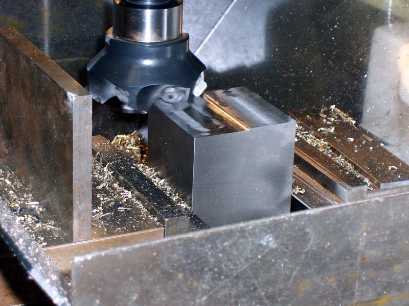

How to Make a CNC Turner's Cube:
[ Creative CNC Project ]
The Magic of the Turner's Cube
The Turner's Cube is a fascinating object. In the old
days, novice machinist's were handed one and told to work out how to make
one of their own. It was considered a good test to give a budding machinist
to see whether they could first understand how to go about making one
and second to see whether they could operate the machinery to the level
of precision needed to produce a nice cube.
It isn't just machinists who love Turner's Cubes. After seeing my first example, my wife immediately appropriated it for display in the kitchen. She later asked me to make her a small one for a pendant. Color me surprised as most of her input on my machine so far had been to hold down the costs and quit dragging chips into the house!
Here are some spectacular examples of the art:
In perspex and displayed on an edge by Mark Thomas...
Even under construction Mark's work is beautiful. Kind of like a flux capacitor for the De Lorean!
Lots of embedded shapes are possible with CNC. They'd make pretty Christmas tree ornaments!
This cube was
made by Marcel
Beaudry. Sticklers will tell you it isn't truly a Turner's cube unless
the interior shapes are free to float. You can make that happen with an
undercut using a cutter with flutes larger than the shank. For example,
use a dovetail cutter...
A Jack in a Cube...
Turner's Cube Dimensions
After seeing enough different
examples go by on the web, I got the bug and decided to try to make one.
Working out the dimensions is the first problem. For a given cube, one
needs to understand the diameter and depth of bore needed to produce the
desired effect. This sounds like a job for the G-Wizard calculator!
So, I added a quick and easy calculator that takes your face width and cranks out the hole diameters and their depths:
Here is the calculator set up for a 4" face width...
To figure out the proportions the calculator uses, I went through through a few quick iterations looking at Rhino 3D models to create a pleasing result:
Squaring Up the Block
The first place to start making a Turner's
Cube is to square up a block of material. My project calls for a
2 1/2" square block of material, but you could scale it to any size
or you could use the spreadsheet or you CAD software to figure out your
own dimensions. If you're going to be making the cube through manual machining,
I recommend squaring the block to exactly the desired dimensions of the
cube. Then you can either bore out the holes on the lathe or the mill.
However, if you plan to use CNC, just get the block square and either
exactly the correct size (realizing that "exactly" means to
you tolerances, as decorative art a few thou will be fine) or just a little
larger. The main thing is that you be able to set it in the vise squarely,
which means the stock needs to be square.
Here is an example of how I go about squaring
up a block of aluminum:
That's my DeWalt Multicutter, a killer
carbide saw for chopping metal. Works way better than an abrasive chop
saw or the slow 4x6 metal cutting bandsaw I used to use!
It took about 30 seconds to chop that block
of aluminum off...
Next, I locked that block down in the softjaws
of my 6" Kurt vise on my Industrial Hobbies
mill. The face mill is a 7 insert 3" diameter Lovejoy 225 that
I got off eBay for a steal brand new from Lovejoy. Really a nice cutter
and is much faster than a fly cutter for this sort of thing. The finish
left behind is not bad, but a well tuned up fly cutter will still leave
a nicer finish. This cutter is running at max spindle rpm (1500) and the
fastest my power feed will feed. Depth
of cut is about 0.020". It just sings right through the material.
Once you've got the first face square, flip
the block upside down and do the second face. Those two faces should now
be parallel to one another. Be sure to either use parallels or the soft
jaws to sit the block up high in the vise. The sides of the block have
not been machined and you want to minimize their effect on the procedure.
Now that you've got 2 sides parallel, bury
the cube down in the vise with the jaws bearing on those 2 sides and do
the 3rd face. When that's done, flip it over and catch the 4th face. That
just leaves the top and bottom of the cube. There's a trick to these that
I learned reading Machine
Shop Trade Secrets. Cut the 5th face, with the cube buried in the
jaws. Now flip the cube upside down, but turn it 90 degrees as you flip
it. Mill the 6th face. All sides are now square except for the 5th. Flip
the cube again and mill that 5th face. Your workpiece is now square, meaning
the sides are all parallel and at right angles, but the width of each
edge may not be identical.
Let's recap the milling steps to square the
block:
- Put the rough stock on parallels or on
a softjaw step in your milling vise and surface the top.
- Flip the block so the freshly machined
face is down and surface the top. Now we have 2 faces parallel to one
another.
- Bury the block in the vise with the jaws
bearing on the 2 parallel sides and surface again.
- Flip the block upside down and surface
the 4th face.
- Now there are just 2 faces left, and there
are 4 faces square to one another. Bury the block with 2 of the 4 faces
against the jaws and an unsurfaced face up (the other unsurfaced face
is at the bottom. Surface the 5th face.
- Now flip the cube upside down, and rotate
it 90 degrees. Surface the 6th face.
- Your 5th face (on the bottom right now)
is not yet square. Flip the cube again and surface that face.
All sides are now square to one another,
although the dimensions of the workpiece may not be square. Measure the
different dimensions and see what to do next:
I used my surface plate and height gage to
measure the cube, and just wrote the dimensions onto the cube faces. The
two faces you can see are on sides measuring 2.503" and 2.436".
As I'm striving to get to 2.350", I have marked how much material
I want to remove from each face. This is another job for the face mill,
although you may want to try something finer for the last finishing cuts.
I didn't bother as this is my first cube and I had no idea how it might
turn out. I got it within +/- 0.001" in thickness, and the sides
measured to 0.001" in squareness as well with my tenths indicator.
More than satisfactory for this project!
For a tip or two about precision
face milling, check the milling techniques
page under "Accurate Z-Axis Adjustment". Also, check our page of tips to make sure you're getting the best possible surface finish from your milling. There are a few
tricks to try!
Manual Machining: Things Are About to Get Very Boring
Now
I started out trying to make Turner's cubes on my mill
and lathe with manually machining and botched up 2 tries. I got closer
with the mill, but I think that was dumb luck. The mill attempt was first,
and failed when I flipped the cube but made a mistake in lining it up.
The lathe attempt failed because my first spreadsheet had an error. I
made what they called out, but it wasn't a Turner's Cube because the bores
were too large. Doh!
Important tip: Do your bores on two adjacent faces (faces
at right angles to one another) first and you'll see the error of your
ways before wasting too much time.
As you must have surmised, the Turner's Cube
is an ideal 4-jaw chuck exercise. Many HSM's dread the 4-jaw, but I find
it is my second most commonly used chuck, next to my 6-jaw. Maybe you'll
like my trick for squaring up rectangular workpieces that I've show here.
I use a bubble level to get the face level, then I drop my height gage
onto the cross slide platform (mine is flat) and measure the height of
the face. This is compared to the height of the opposite face. If you
are measure like this, it pays to record how much movement can be had
by a full twist of one of the jaw screws. On my 4-jaw, it's 0.140"
per turn. Once you know how far off you are numerically and how much a
turn gives you, the process goes much faster. As you can see, I got it
lined up within a thousandth!
Once we have a face lined up, we're going
to go through the whole series of bores before removing the cube to work
on another face.
I did not complete a Turner's cube via manual
machining, because about that time I got serious about converting
my mill to CNC. So this story ends with the manual version incomplete
(sorry, you'll have to work through that one for yourself), as I move
on to CNC.
CNC Machining: Circular Interpolation
is Your Friend!
Let's assume you've got a piece of squared
stock ready to go. By squared, I mean the faces are appropriately flat
and parallel or perpendicular to one another. The dimensions may not be
square, but each one is at least as long as the finished cube's dimension.
Making the Turner's Cube from that stock on a CNC mill is pretty easy.
To do so, we need to be able to drop the workpiece in the vise with predictable
alignment, let's say predictable to the lower left corner of the cube.
The Y and Z predicatability will come from step jaws or parallels on a
properly trammed in vise. The X may come from a workstop. I like to use
a Kant-Twist clamp on the jaw.
So now we can drop the piece on the vise,
and because of symmetry, we can run one CNC program on each of the 6 faces,
and we will be done. That CNC program does the following:
1. Surfaces the face until we get to the
desired z-height. Let's say we zero Z at the top of the parallels (or
step on the jaw). Then Z = 0.000" is the bottom of the workpiece.
If we want a 2.500" cube as is called out on the drawing above, we
surface until we get to Z = 2.500".
2. Next we cut a series of concentric circular
pockets, the diameters and depths of each pocket as called out on the
dimensioned drawing. That drawing uses a minimum of 0.250", so we
can use a 3/16" endmill to avoid a tool change. Based on that drawing,
we want the following circular pockets:
- 1.856" diameter to a depth of 0.500".
In other words, cutting from z = 2.500" to z = 2.000".
- 1.237" diameter to a depth of 0.750".
In other words, cutting from z = 2.500" to z = 1.750". I give
the full cut range so I don't have to worry about rapids hitting the edge
of the pocket for some crazy reason. We can optimize it better, but it
may not be worth worrying about.
- 0.619" diameter to a depth of 1.000".
So cutting from z = 2.500" to z = 1.500".
- 0.250" diameter to a depth of 1.500".
Cutting from z = 2.500" to z = 1.000". In theory, I could cut
this to a depth of 1.250", and the other side meets in the middle.
I am cutting all the way through just to make a nice clean hole.
Note that you won't need a CAM program for
this--surfacing and cutting circular pockets are both operations the Mach3
wizards support very nicely right out of the box.
I'll structure this as 2 CNC programs, since
I need to surface and then I need to interpolate some holes. To save on
tool changes, I could surface all 6 sides with the same tool, and then
start in on the holes after a tool change. I've got some new tooling I
want to play with as well, so I'll do some of the work with different
cutters.
Let's get started!
First thing after squaring the stock to
make a cube is setting the Z height...
Now we start interpolating holes...
Lots and lots of holes...

You can see my makeshift air stream to
clear the chips...
Working on the third of four layers...
Cube after milling. Could use a little
more cosmetic cleanup, but it is basically done!
Widgitmaster's Cubes on a Lathe...
Bandsaw has the fastest material removal rate, LOL...

Square with the face mill. A handy piece of stock makes a chip guard so they don't go everywhere...
Ready for the lathe as soon as we build a fixture. Fixtures make everything better...
Massive faceplate fixture made for the purpose...
Cube is held in place like so...
Taking shape. Use the shortest boring bar possible. Widget is using brazed carbide bars diamond honed to a keen edge...

His custom turret lathe with carriage stops makes repeating multiple parts easy!
303SS looks great on a Turner's Cube, eh?
Oh no, they're multiplying!
Turner's and Other Interesting Geometric
Diversions by Others
Nice account of making cubes on a lathe by sbtroy...


Be sure to check out G-Wizard, our Machinist's Software!